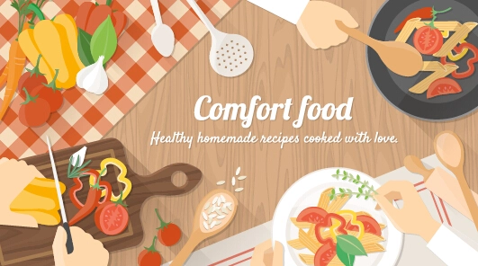

Beginner Cooking Tips.
While countless food blogs offer tips for beginners, these are the best cooking blogs for beginners. These blog also feature short reviews of recipes. The Back Road Journal is an excellent choice for those just starting, and we offers daily updates of wok recipes and food news.
readHome Decor.
As we evolve, our homes should too. Design is coming to grips with one’s real lifestyle, one’s real place in the world. Rooms should not be put together for show but to nourish one’s well being..
read
Coffee And Creativity.
There’s nothing quite like that first cup of coffee in the A.M. A few sips of the aromatic magic stuff later and you're suddenly awake and motivated to tackle your day head on. It's truly the best. Whether you enjoy a cold brew, a latte, or a double shot of espresso....
read
Travelling.
A New Beginning Of Life.
Once a year, go someplace you’ve never been before. Whenever you find yourself on the side of majority, it’s time to pause and reflect. You must be the change you wish to see in the world. We have always tried to live a life less ordinary and think outside the box. I do believe this has helped us have success in our business and our relationship.
read
Climate and Carbon Exchange.
How carbon moves into and out of the forest, and how carbon cycles within the forest, is fundamental to understanding the forest's metabolism. Weather and climate affect the forest's metabolism, and in turn, how much carbon the forest absorbs from the atmosphere may mitigate climate change. Long-term eddy-covariance measurements provide continuous estimates of atmosphere-biosphere exchange of carbon, water, energy, ozone, and nitrogen compounds.
read